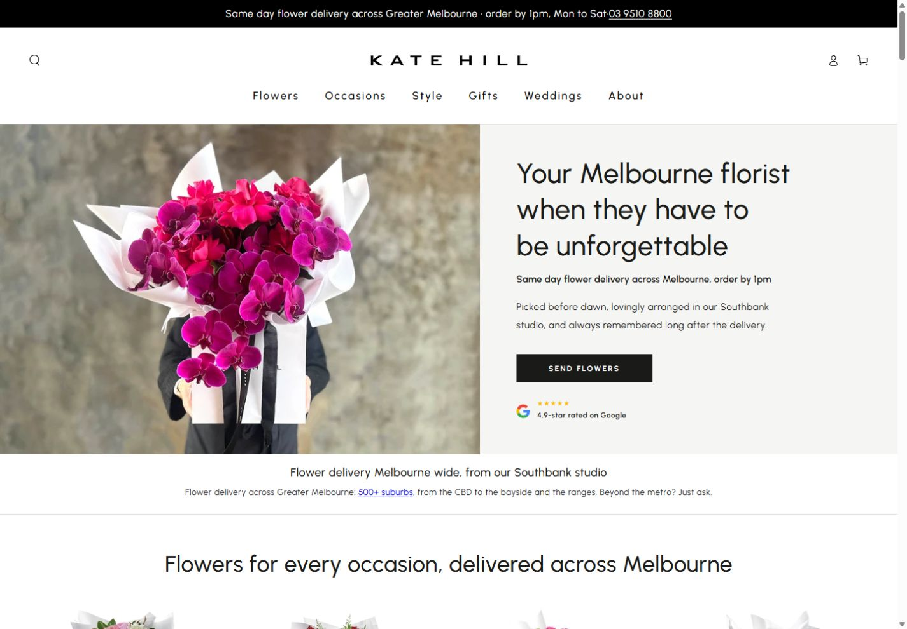

Kate Hill Flowers
FloristryMelbourne
Kate Hill Flowers appears at #1 for “wedding bouquets melbourne,” “bridal bouquets melbourne” and “southbank florist.” “Florist south melbourne” appears at #4.
Selected organic position
#1wedding bouquets melbourne
November 2026 snapshotRecorded search positions
November 2026
| Search term | Position |
|---|---|
| wedding bouquets melbourne | #1 |
| bridal bouquets melbourne | #1 |
| southbank florist | #1 |
| florist south melbourne | #4 |
These are historical keyword positions. Rankings can change; the figures do not represent traffic, revenue or a guarantee of future performance.
Website preview

Discuss your SEO project.
Send your website address and SEO priorities, or book a discovery call to discuss the work.